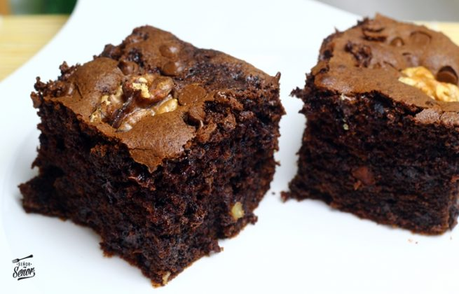

Brownies

Description
The brownies are rich, fudgy in the middle, and made completely from scratch. These homemade brownies are so much better than the box, and I bet you have what you need to make them already sitting in your kitchen
Ingredients:
- 2/3 Cup NESTLÉ delicacy
- 2 Cups Brown Sugar
- 3/4 Cup Vegetable Oil
- 4 Egg Units
- 1/2 teaspoon baking powder
- 1/2 Cup Cocoa, Powdered
- 1 Cup Unprepared flour
- 1 teaspoon vanilla extract
- 1/2 Cup Unsalted, Toasted Pecans (Chopped)
- 1/4 Cup Cocoa, Powdered
- 1/4 Cup Unsalted, Toasted Pecans (Chopped)
Steps:
- Preheat the oven to 180 °C.
- Beat the oil with the sugar, cocoa and vanilla at minimum speed. Add the eggs, one by one, and continue beating. Add the baking powder and flour and mix until everything is smooth. Add the toasted and chopped pecans; mingle.
- Pour the preparation into a buttered mold and take it to the oven for approximately 15 minutes. When removing the mold from the oven, wait about 5 minutes before cutting the brownies.
- To decorate, mix the delicacy with a little cocoa and chopped pecans. Spread the mixture over each brownie and serve.
Return